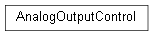
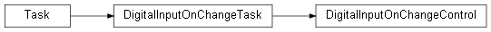
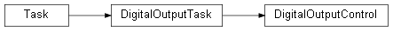
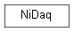

framework.module.nidaq
Pachymeter Automated Software Verification Rig NI DAQ Module Implementation.
Classes
EncoderWaveformTask: Implements a streamed encoder waveform task.PdaWaveformTask: Implements a streamed PDA signal waveform task.ScanWaveformTask: Implements a synchronised PDA signal and encoder waveform task.AnalogOutputControl: Implements a control for the on-demand analog output.DigitalInputOnChangeControl: Implements a control for the n-change digital inputs.DigitalOutputControl: Implements a control for the on-demand digital outputs.NiDaq: NI DAQ Control.
- class framework.module.nidaq.EncoderWaveformTask(rate: float, encoder_data: numpy.ndarray, samp_clk_source: str = '', sample_mode: nidaqmx.constants.AcquisitionType = AcquisitionType.FINITE)
Implements a streamed encoder waveform task.
This class provides streaming of the simulated motor encoder pulses A, B and Z on P0.0, P0.1 and P0.2. The ndarray of digital sample data should be a 1D array of uint32 where A is bit 0, B is bit 1 and Z is bit 2.
Inheritance
- class framework.module.nidaq.PdaWaveformTask(rate: float, signal_data: numpy.ndarray, samp_clk_source: str = '', sample_mode: nidaqmx.constants.AcquisitionType = AcquisitionType.FINITE)
Implements a streamed PDA signal waveform task.
This class provides streaming of the simulated PDA signal on AO 0. The ndarray of analog sample data should be a 1D arrays of float where AO 0 is the range -5V to +5V.
Inheritance
- class framework.module.nidaq.ScanWaveformTask(rate: float, signal_data: numpy.ndarray, encoder_data: numpy.ndarray, sample_mode: nidaqmx.constants.AcquisitionType = AcquisitionType.FINITE)
Implements a synchronised PDA signal and encoder waveform task.
This class provides synchronised streaming of the simulated PDA signal on AO 0 and the simulated motor encoder pulses A, B and Z on P0.0, P0.1 and P0.2. The ndarrays of sample data should be 1D arrays of the same length with the AO 0 data being float in the range -5V to +5V and the digital data being uint32 where A is bit 0, B is bit 1 and Z is bit 2.
Inheritance
- start() None
Transitions the task to the running state to begin the measurement or generation. Using this method is required for some applications and is optional for others.
If you do not use this method, a measurement task starts automatically when the DAQmx Read method runs. The autostart input of the DAQmx Write method determines if a generation task starts automatically when the DAQmx Write method runs.
If you do not use the DAQmx Start Task method and the DAQmx Stop Task method when you use the DAQmx Read method or the DAQmx Write method multiple times, such as in a loop, the task starts and stops repeatedly. Starting and stopping a task repeatedly reduces the performance of the application.
- stop() None
Stops the task and returns it to the state the task was in before the DAQmx Start Task method ran or the DAQmx Write method ran with the autostart input set to TRUE.
If you do not use the DAQmx Start Task method and the DAQmx Stop Task method when you use the DAQmx Read method or the DAQmx Write method multiple times, such as in a loop, the task starts and stops repeatedly. Starting and stopping a task repeatedly reduces the performance of the application.
- class framework.module.nidaq.AnalogOutputControl
Implements a control for the on-demand analog output.
The NI DAQ analog channel used is:
AO 0 - -5V/+5V
NI_AOUT_0 is initialised to 0.000V on initialisation i.e. mid-range. This will translate to an NI_AOUT_0_3V3 of 1.667V.
Inheritance
- get_vout() float
Gets the analog output voltage.
- reset()
Reset the AnalogOutputControl object to its default state.
- set_vout(vout: float) None
Sets the analog output voltage.
- class framework.module.nidaq.DigitalInputOnChangeControl
Implements a control for the n-change digital inputs.
The NI DAQ digital inputs used are:
P0.4 - Laser LON command (active high).
P0.5 - Encoder M+/M- detection (active high).
P0.6 - Spare.
P0.7 - Spare.
On-change detection requires buffered access so on the NI 6363 this control can only be used with port 0. This controller is implemented as a persistent task.
Inheritance
- is_enc_m() bool
Checks whether ENC_M is active (high) or inactive (low).
- Returns
True if ENC_M is active (high), False if ENC_M is inactive (low).
- is_lsr_lon() bool
Checks whether LSR_LON is active (high) or inactive (low).
- Returns
True if LSR_LON is active (high), False if LSR_LON is inactive (low).
- register_callback(callback_method) None
Method to allow scripts to monitor digital inputs via callbacks.
- Parameters
(function) (callback_method) – a callback method to be invoked via the on_change callback.
- reset()
Reset the DigitalInputOnChangeControl object to its default state.
- wait_for_enc_m(active: bool) None
Wait for ENC_M to be active (high) or inactive (low).
- wait_for_lsr_lon(active: bool) None
Wait for LSR_LON to be active (high) or inactive (low).
- class framework.module.nidaq.DigitalOutputControl
Implements a control for the on-demand digital outputs.
The NI DAQ digital outputs used are:
P1.0 - Laser LPON confirmation (active high).
P1.1 - USB pass-through enable (active high).
P1.2 - DUT power enable (active high).
P1.3 - Spare.
This controller is implemented as a persistent task.
Inheritance
- is_dut_en() bool
Checks whether DUT_EN output is active (high).
- Returns
returns True if DUT_EN is active (high), False if DUT_EN is inactive (low).
- is_lsr_lpon1() bool
Checks whether LSR_LPON1 output is active (high).
- Returns
returns True if LSR_LPON1 is active (high), False if LSR_LPON1 is inactive (low).
- is_usb_en() bool
Checks whether USB_EN output is active (high).
- Returns
returns True if USB_EN is active (high), False if USB_EN is inactive (low).
- reset()
Reset the DigitalOutputControl object to its default state.
- set_dut_en(active: bool) None
Set DUT_EN output active (high) or inactive (low).
- set_lsr_lpon1(active: bool) None
Set LSR_LPON1 active (high) or inactive (low).
- set_usb_en(active: bool) None
Set USB_EN output active (high) or inactive (low).
- class framework.module.nidaq.NiDaq
NI DAQ Control.
Inheritance
- is_auto_lpon1() bool
Checks whether automatic LPON1 tracking of LON is active.
- Returns
True if automatic LPON1 tracking is active, False otherwise.
- reset()
Reset the NiDaq object to its default state.
- set_auto_lpon1(active: bool) None
Enables or disables automatic (software) tracking of LPON1 by LON.